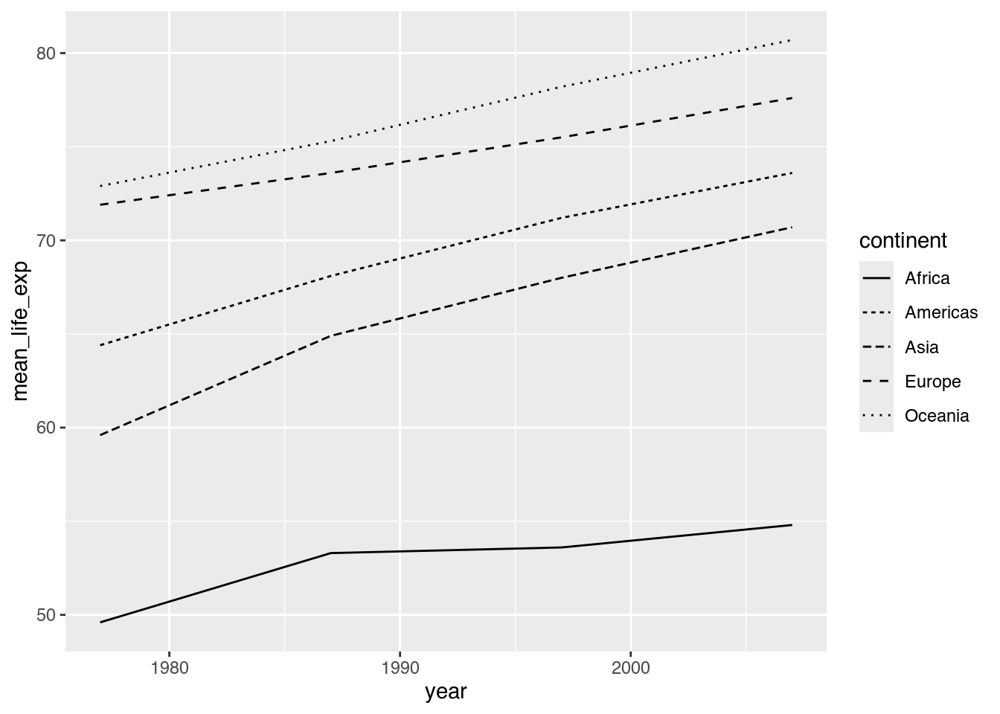
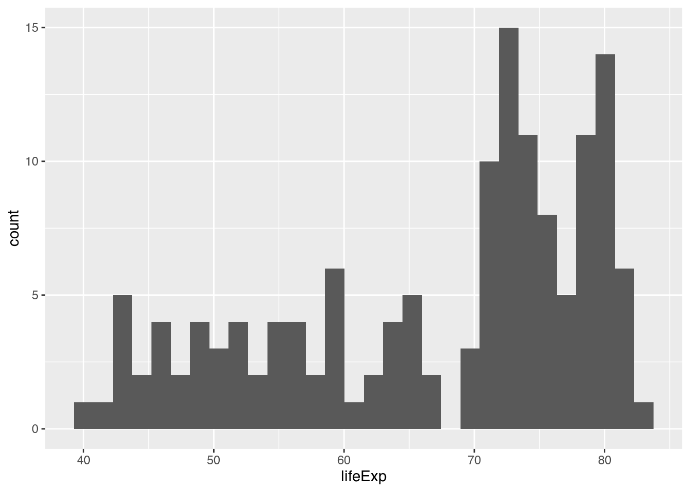
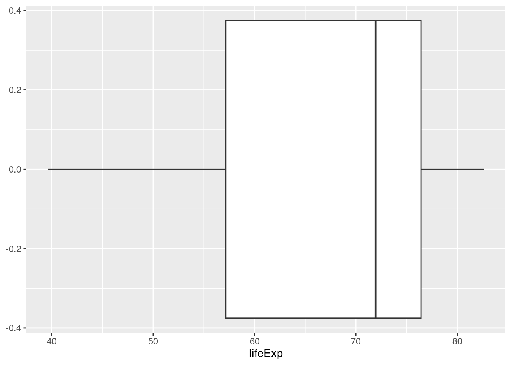
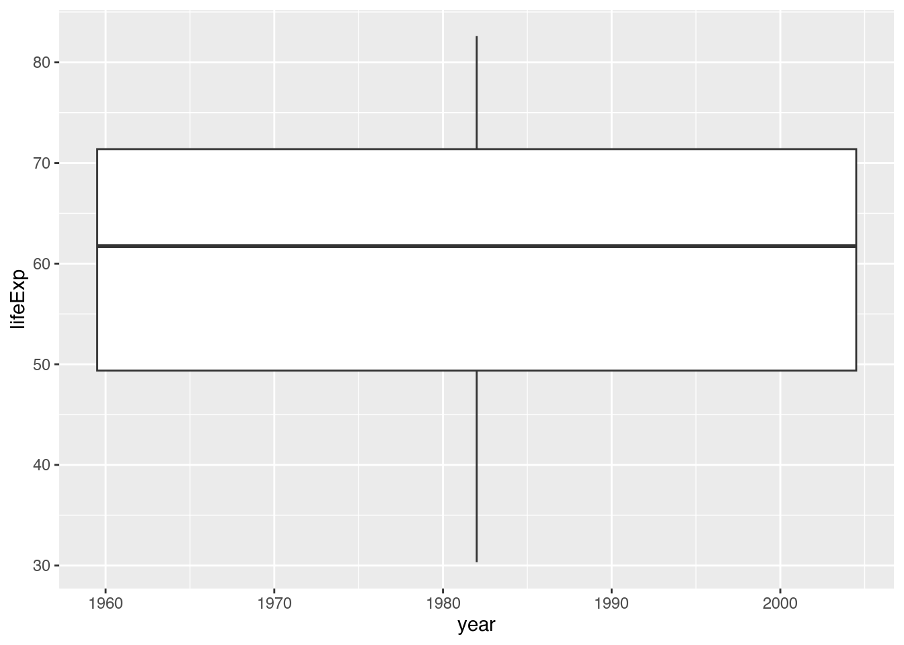
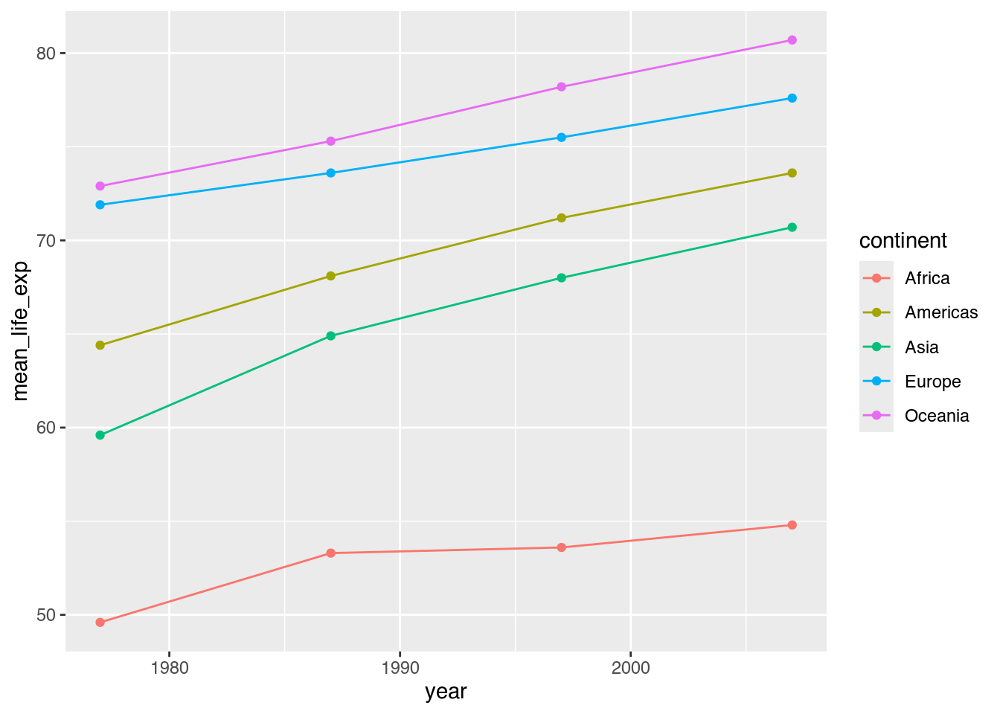
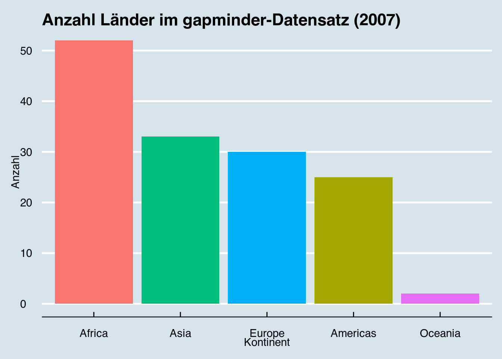

library(emoji)
library(gapminder)
library(ggthemes)
library(palmerpenguins)
library(tidyverse)
library(treemapify)
library(viridis)5 Datenvisualisierung
Entgegen verbreiteter Auffassungen sprechen Zahlen selten für sich, sondern werden auf bestimmte Arten und Weisen kommuniziert. Dabei kommt der Visualisierung von Informationen eine besondere Rolle zu, denn Menschen nehmen visuell Informationen besonders gut auf.
Für angehende data scientists ist Visualisieren aus zwei Gründen eine wichtige Fertigkeit. Einerseits wollen wir unsere Daten entdecken und dabei gegenüber uns selbst Hypothesen und erste Eindrücke bestätigen oder verwerfen und neue entwickeln. Schließlich kann es für uns sehr viel schneller und intuitiver sein, uns einen Datensatz visuell zu erschließen als wir es durch das Lesen von Tabellen könnten. Andererseits wollen wir einer anderen Person gegenüber unsere Aussagen anhand von Daten zu erklären, wobei unsere Visualisierung uns helfen soll, möglichst überzeugend zu argumentieren. Grafische Datenauswertung ist also kein bloßes Anhängsel von data science, sondern ein integraler Bestandteil.
In diesem Kapitel lernen wir…
- …wie wir Grafiken gemäß der grammar of graphics verstehen.
- …wie die grammar of graphics im
tidyverse-Paketggplot2genutzt wird. - …wie wir die gängigsten Diagrammtypen mit
ggplot2erzeugen. - …wie wir unsere Visualisierungen erweitern und verfeinern.
Wir benötigen hierfür die folgenden Pakete:
Visualisierung mit base R
In diesem Kapitel lernen wir Visualisierung im Rahmen des tidyverse-Paketes ggplot2 kennen. Es ist aber keineswegs so, dass dies die einzige Art und Weise wäre, mit R Grafiken zu erzeugen. Auch base R liefert bereits vielseitige (und manchmal mit einer einzigen Zeile Code schnell zu erstellende) Möglichkeiten zur Grafikerstellung. Eine gute Einführung liefern Douglas u. a. (2024, Kap. 4).
5.1 Die grammar of graphics
Das Konzept der grammar of graphics, also der “Grammatik der Grafiken”, geht zurück auf Wilkinson (2005). Es besagt, dass jede Grafik sich – ähnlich wie ein Satz – in eine begrenzte Anzahl an Elementen zerlegen lässt. Kennen wir diese Elemente, können wir Grafiken besser verstehen und verändern.
Innerhalb der grammar of graphics unterscheiden wir sieben Elemente1:
- Daten (data): Welche Informationen stellen wir dar?
- Ästhetik (aesthetics): Welche Variablen stellen wir mit welcher Eigenschaft (Position, Form, Farbe, Größe usw.) dar?
- Geometrische Objekte (geometrics, oder kürzer geoms): Aus welchen Formen besteht die Grafik?
- Facetten (facets): Welche Untergruppen stellen wir separat dar?
- Statistiken (statistics): Welche statistischen Parameter enthält unsere Grafik?
- Koordinaten (coordinates): Welche Dimensionen hat unsere Grafik?
- Thema (themes): Wie sehen die Elemente unserer Grafik aus, die keine Daten sind (Schriftarten, Achsenbeschriftungen, Hintergrundfarben usw.)?
Diese sieben Elemente können wir uns als unterschiedliche Schichten (layer) einer Grafik vorstellen. Jede Grafik kann also als eine Kombination dieser Schichten verstanden werden. Wenn wir alle Lagen “übereinanderlegen”, entsteht unsere schlussendliche Grafik.

Diese Ausführungen wirken recht abstrakt. Am besten lässt sich die Perspektive der grammar of graphics anhand eines Beispiels illustrieren.
5.1.1 Ein gapminder-Beispiel
Die folgende Grafik wurde mithilfe des uns bereits bekannten gapminder-Datensatzes erstellt. Im Verlauf dieses Kapitels werden wir alle nötigen Schritte lernen, um eine solche Grafik nachzubilden, vorher müssen wir sie aber angemessen verstehen.

Eine grammar of graphics-Analyse der Grafik könnte wie folgt lauten:
- Daten: Die Grafik stellt die historische Lebenserwartung der Bevölkerung unterschiedlicher Kontinente in Jahren dar.
- Ästhetik: Der jeweilige Kontinent wird auf der X-Achse, die Anzahl der Jahre wird auf der Y-Achse abgetragen. Zudem werden die Kontinente anhand ihrer Farbe unterschieden.
- Geometrische Objekte: Die Werte werden in Form von Säulen dargestellt.
- Facetten: Die Grafik ist in vier separate Grafiken unterteilt, die ihrerseits die Werte je eines der vier Jahre (1977, 1987, 1997, 2007) darstellen.
- Statistiken: Die X-Achsenbeschriftung besagt, dass es sich um einen Mittelwert (mean) handelt.
- Koordinaten: Die X-Achse enthält fünf Kontinente, die Y-Achse verläuft von 0 bis 90 mit Beschriftungen in Abständen von je 10 Jahren.
- Thema: Alle Schriftarten sind serifenlos. Der Hintergrund des Diagrammbereichs ist hellgrau, der Hintergrund der Jahresangaben in mittlerem Grau eingefärbt.
Nachdem wir eine solche Grafik zu lesen verstehen, möchten wir im weiteren Schritt nachvollziehen, wie wir sie selbst konstruieren können. Hierfür benötigen wir den Ausgangsdatensatz cont_life_exp, welchen wir mit den uns bekannten dplyr-Funktionen erzeugen können.
cont_life_exp <- gapminder |>
filter(year %in% seq(1977, 2007, by = 10)) |> # Vier Jahre filtern
group_by(continent, year) |> # Gruppen auf Basis von Kontinent und Jahr bilden
summarize(mean_life_exp = round(mean(lifeExp), digits = 1)) # Mittelwerte berechnen
cont_life_exp |>
slice_head()# A tibble: 5 × 3
# Groups: continent [5]
continent year mean_life_exp
<fct> <int> <dbl>
1 Africa 1977 49.6
2 Americas 1977 64.4
3 Asia 1977 59.6
4 Europe 1977 71.9
5 Oceania 1977 72.9Wir werden später mit diesem etwas längeren data frame arbeiten. Vorerst erstellen wir einen noch kürzere Tabelle, die lediglich die Werte des Jahres 2007 enthält.
cont_life_exp_2007 <- cont_life_exp |>
filter(year == 2007) # Year: 2007
cont_life_exp_2007# A tibble: 5 × 3
# Groups: continent [5]
continent year mean_life_exp
<fct> <int> <dbl>
1 Africa 2007 54.8
2 Americas 2007 73.6
3 Asia 2007 70.7
4 Europe 2007 77.6
5 Oceania 2007 80.75.2 ggplot2
ggplot2 ist das tidyverse-Paket zum Erzeugen einer Vielzahl von Grafiken auf Basis der grammar of graphics, was auch an dem Präfix gg zu erkennen ist. Der Umfang seiner Möglichkeiten wird laufend durch neue Pakete erweitert, die nicht selten ebenfalls gg im Namen tragen.2 Dieser Umfang und die durchdachte Konstruktion von ggplot2 sind es, die immer wieder R zu einer, wenn nicht der besten Möglichkeit zur Erstellung professioneller Grafiken machen.
5.2.1 Die Grundfunktion
Die Grundfunktion von ggplot2 ist ist ggplot(). Ihr Zweck ist, das ursprüngliche Grafikobjekt zu erzeugen, dem wir im weiteren zusätzliche Elemente hinzufügen. Die wichtigsten Parameter von ggplot() sind data und mapping. Mit data nennen wir ggplot() einen data frame, der die Daten enthält, die wir visualisieren möchten.
ggplot(data = cont_life_exp_2007) # ggplot-Objekt erzeugen
Ohne weitere Eingaben erzeugt ggplot() lediglich eine “weiße Leinwand”, wie wir sie im Plots-Fenster in RStudio sehen. Das ergibt insofern Sinn, als dass wir noch nicht angegeben haben, welche Werte wir wie visualisieren wollen.
data |> ggplot() oder ggplot(data)?
Nachdem uns |> bereits beim Transformieren von Daten vertraut geworden ist, sollte es uns nicht überraschen, dass wir den output solcher Bearbeitungen – fast immer ein data frame bzw. eine tibble – auch direkt in einen ggplot()-Aufruf weiterleiten können. Das heißt, die folgenden zwei Codebeispiele bewirken dasselbe Ergebnis.
ggplot(data = cont_life_exp_2007) # Daten ohne |> angebencont_life_exp_2007 |> # Daten mit |> angeben
ggplot()Im nächsten Schritt müssen wir mit dem Parameter mapping die Ästhetik der Grafik spezifizieren. Das bedeutet, wir müssen Variablen in unserem Datensatz mit visuellen Eigenschaften verbinden. Dieses “Verbinden” wird auf Englisch auch als mapping (“mapping a variable to an aesthetic”) bezeichnet, woher die Bezeichnung des Parameters rührt. Dem Parameter mapping nennen wir die aes()-Funktion (aesthetics) und verbinden innerhalb von ihr eine Variable mit einer visuellen Eigenschaft. In vielen Fällen ist die wichtigsten visuellen Eigenschaft die Position eines geometrischen Objektes auf einer oder mehreren Achsen. In unserem Beispiel möchten wir auf der X-Achse (x) den Kontinent (continent) und auf der Y-Achse (y) die mittlere Lebenserwartung (mean_life_exp) abtragen.
ggplot(data = cont_life_exp_2007,
mapping = aes(x = continent, # X-Achse: continent
y = mean_life_exp)) # Y-Achse: mean_life_expMit diesen zwei Zuweisungen weiß ggplot() bereits genug, um einen Diagrammbereich zu zeichnen und zu beschriften. Unsere “weiße Leinwand” enthält folglich bereits die Achsenbeschriftungen, die auf die von uns angegebenen Variablen, deren verweisen.
5.2.2 Geoms hinzufügen
Im nächsten Schritt müssen wir ein geometrisches Objekt wählen, das unsere Daten darstellt. Wie im Beispiel entscheiden wir uns für Säulen. Diese Säulen können wir erzeugen, indem wir am Ende unseres bisherigen Codes ein + eingeben und in einer neuen Zeile geom_col() (geometry: column) eingeben.
ggplot(data = cont_life_exp_2007,
mapping = aes(x = continent,
y = mean_life_exp)) +
geom_col() # Säulen einzeichnen
Dem + kommt dabei eine besondere Rolle zu, es fügt unserem ggplot-Objekt ein weiteres Element hinzu. Solch ein Element kann dabei nicht nur ein geom sein, sondern sich auch auf unsere verbleibenden Elemente der grammar of graphics beziehen. Aus diesem Grund wird uns + noch oft begegnen, denn es spielt eine ähnlich zentrale Rolle beim Visualisieren von Daten wie |> beim Transformieren mit dplyr.
Unsere Grafik sieht bereits ansehlich aus. Was aber unter anderem noch fehlt, ist die farbliche Unterscheidung der Säulen. Weil wir inzwischen begriffen haben, dass die Füllfarbe unserer Säulen lediglich eine weitere Ästhetik ist, können wir im Rahmen unseres aes()-Aufrufs einfach eine weitere Zuschreibung vornehmen: fill verweist hier auf die Füllfarbe.
ggplot(data = cont_life_exp_2007,
mapping = aes(x = continent,
y = mean_life_exp,
fill = continent)) + # Farbe: continent
geom_col() 
Wohin mit
aes()?
In den meisten Fällen erfolgt der Aufruf von aes() innerhalb von ggplot() als Argument des Parameters mapping so wie hier gezeigt.
ggplot(data = cont_life_exp_2007,
mapping = aes(x = continent, # aes() innerhalb von ggplot()
y = mean_life_exp)) +
geom_col()
Innerhalb der Konzeption von unterschiedlichen “Schichten” von Grafiken kann aes() aber auch aus ggplot() herausgelöst und mit + als eigenständiges Element angegeben werden.
ggplot(data = cont_life_exp_2007) + # ggplot() endet hier
aes(x = continent, # aes() als eigenständiges Element
y = mean_life_exp) +
geom_col()
Als dritte Option kann aes() wiederum als Argument für den Parameter mapping innerhalb des jeweiligen geom_*() angegeben werden. Das kann sinnvoll sein, wenn innerhalb einer Grafik mehrere geoms mit jeweils unterschiedlichen ästhetischen Zuweisungen erzeugt werden. Soweit sind wir noch nicht, sollten es aber im Kopf behalten, um nicht durch Beispiele aus anderen Lernmaterialen verwirrt zu werden.
ggplot(data = cont_life_exp_2007) + # ggplot() endet hier
geom_col(mapping = aes(x = continent, # aes() innerhalb von geom_col()
y = mean_life_exp))5.2.3 Ästhetiken
Anhand unseres Beispiels haben wir bereits drei visuelle Eigenschaften kennengelernt (Position auf x und y sowie fill). Wenn wir ggplot nutzen, werden wir schnell feststellen, dass unterschiedliche geoms unterschiedliche visuelle Eigenschaften darstellen können. Intuitiv ergibt dies Sinn: Kann eine Säule, die ja immer rechteckig ist, die Eigenschaft “Form” ändern? Nein. Ebenso wenig kann eine Linie eine “Füllfarbe” ändern, sondern höchstens ihre Linienfarbe. Die wichtigsten aesthetics kennenzulernen, ist entsprechend sinnvoll3:
xundy: Position eines geoms auf der X- bzw. Y-Achse.alpha: Transparenz einer Füllfarbe, wobei 0 für vollständig transparent und 1 für vollständig deckend steht.area: Fläche eines Rechteckes.color: Farbe eines geoms, die auch alscolabgekürzt werden kann.group: Gruppe an Beobachtungen, die sich ansonsten überschneiden.fill: Füllfarbe eines geoms.linetype: Linientyp einer Linie, die z.B. durchgehend, gepunktet oder gestrichelt gezeichnet werden kann.linewidth: Strichdicke einer Linie, angegeben in Einheiten von je 0,75mm.shape: Form eines Punktes, der z.B. als Kreis, Raute oder Dreieck gezeichnet werden kann.size: Größe eines Punktes.
Je nach geom kann es noch viel mehr visuelle Eigenschaften geben, die man aber am besten erst dann erkundet, wenn man es nutzen möchte. Auch hierfür ist der ggplot2-Cheatsheet (Kapitel 2.4.5) eine nützliche Ressource.
5.2.4 Grafiken exportieren
Sobald wir eine Grafik erzeugt haben, möchten wir sie natürlich auch als Datei exportieren. Dies können wir auf zwei unterschiedliche Weisen tun. Zum einen können wir die uns gegenwärtig angezeigte Grafik in RStudio über Plots → Save as entweder als Grafikdatei (hier empfiehlt sich meist PNG) oder als PDF-Datei abspeichern. Über ein neues Fenster können wir Name, Maße und weitere Angaben zur Grafik vornehmen und sie dann mit Save exportieren.
Zum anderen können wir unsere Grafik auch über die Konsole exportieren. Die Funktion hierfür ist ggsave(). Durch ?ggsave erfahren wir, dass wir dem Parameter filename wenigstens einen Dateinamen (mit Endung!) liefern müssen, um eine Datei zu exportieren. Desweiteren können wir mit height (Höhe) und width (Breite) die genauen Ausmaße unserer Grafik angeben, müssen aber mit unit (Einheit) auch angeben, worauf sich unsere numerischen Angaben beziehen (z.B auf "mm", "cm" oder "px").
Um also unsere letzte Grafik als PNG-Datei mit den Maßen 15cm*20cm zu exportieren, schreiben wir den folgenden Code.
ggplot(data = cont_life_exp_2007,
mapping = aes(x = continent,
y = mean_life_exp,
fill = continent)) +
geom_col()
ggsave(filename = "my_plot.png", # Dateinamen und Dateiformat angeben
height = 15, # Höhe angeben
width = 20, # Breite angeben
unit = "cm") # Maßeinheit angebenDie Grafik wurde nun in das gegenwärtige working directory exportiert.
Bislang haben wir nur eine direkt erzeugte Grafik exportiert. Dies geschah dadurch, dass der Parameter plot stardardmäßig auf last_plot() gestellt ist, also die letzte erzeugte Grafik ausgewählt wird. Wie mit anderen Objekten auch, können wir unser ggplot-Objekt aber auch einem Namen zuweisen und es im workspace zeitweise abspeichern. Eine solche Zuweisung ermöglicht uns zum einen, eine einmal geschriebene Grafik immer wieder aufzurufen.
my_plot <- ggplot(data = cont_life_exp_2007, # ggplot-Objekt erzeugen
mapping = aes(x = continent, # X-Achse: continent
y = mean_life_exp, # Y-Achse: mean_life_exp
fill = continent)) + # Farbe: continent
geom_col() # Säulen einzeichnen
my_plot
Unsere erzeugte Grafik, my_plot, hat eigene eigene Objektklasse, nämlich gg bzw. ggplot.
class(my_plot)[1] "gg" "ggplot"Wenn wir uns die Struktur dieses Objektes anschauen möchten (entweder mittels Environment → my_plot oder View(my_plot)), erfahren wir, dass es sich um eine Liste handelt und jedes Listenelement ein Element unserer Grafik repräsentiert. (Keine Sorge: Sie müssen (noch) nicht mit jeder der Bezeichnungen etwas anfangen können!)
my_plot.Dieses Objekt können wir dann direkt an ggsave() zum Export weiterreichen.
# ggsave ohne |>
ggsave(plot = my_plot,
filename = "my_plot.png",
height = 15,
width = 20,
unit = "cm")
# ggsave mit |>
my_plot |>
ggsave(filename = "my_plot.png",
height = 15,
width = 20,
unit = "cm")5.3 Visualisierungsarten
Nachdem wir die grundlegende Funktionsweise von ggplot begriffen haben, möchten wir mehrere Visualisierungsarten – und insbesondere mehrere geoms! – kennenlernen. Sie alle eint, dass wir oft nur geringfügige Veränderungen in unserem Code vornehmen müssen, um sie zu erzeugen. Das ist ein erheblicher Vorteil gegenüber der Erstellung von Diagrammen mit Excel oder anderer klick-basierter Software.
5.3.1 Mengen
5.3.1.1 Säulendiagramm: Anzahl
Die einfachste Art, ein Diagramm zu erstellen, ist, die Anzahl an Beobachtungen hinsichtlich einer bestimmten Variable darzustellen. Hierfür ist geom_bar() gedacht, das lediglich eine einzige Ästhetik, nämlich x, benötigt. Um die Anzahl aller Länder im gapminder-Datensatz im Jahr 2007 darzustellen, genügt ein kurzer Code.
gapminder |>
filter(year == 2007) |> # Nur Beobachtungen des Jahres 2007 auswählen
ggplot(mapping = aes(x = continent)) + # X-Achse: continent
geom_bar() # Säulen zeichnenDass hier einfach nur gezählt wurde, erkennen wir an der Y-Achsenbeschriftung count (“Zählung” oder “Ergebnis”). Allerdings ist die X-Achse hier alphabetisch geordnet, was visuell wenig Sinn ergibt: Mit den zweitmeisten Ländern sollte Asien doch besser direkt auf Afrika folgen. Um die Anordnung im Rahmen von geom_bar() zu ändern, können wir eine Hilfsfunktion aus dem forcats-Package namens fct_infreq() (order factor by frequency of observations, zu deutsch etwa “Faktoren nach Häufigkeit der Beobachtungen ordnen”) innerhalb von aes() nutzen.
gapminder |>
filter(year == 2007) |>
ggplot(mapping = aes(x = fct_infreq(continent))) + # Säulen absteigend ordnen
geom_bar()Die Füllfarbe der Säulen können wir auf die bekannte Weise mit fill verändern. Sobald wir Ästhetiken jenseits von x und y nutzen, fügt ggplot automatisch eine Legende ein.
gapminder |>
filter(year == 2007) |>
ggplot(mapping = aes(x = fct_infreq(continent),
fill = continent)) + # Füllfarbe: continent
geom_bar()Was aber, wenn wir alle Säulen mit einer einheitlichen Linie umranden möchten? Wenn wir color nutzen, wird jeder Säule eine Linie mit eigener Farbe – nämlich derselben, die als fill zur Anwendung kommt – gegeben und das Ergebnis sieht unverändert aus.
gapminder |>
filter(year == 2007) |>
ggplot(mapping = aes(x = fct_infreq(continent),
fill = continent,
color = continent)) + # color: continent
geom_bar()Hier stoßen wir auf ein wichtiges Konzept: variable und konstante Ästhetiken. Innerhalb von aes() vergeben wir nur solche visuellen Eigenschaften, die sich in Abhängigkeit von den Daten unterscheiden sollen – also variabel – sind. Alle Eigenschaften, die für alle geometrischen Objekte gleich – also konstant – sein sollen, geben wir innerhalb des geom_*()-Aufrufes, aber außerhalb von aes() an. Um also jeder Säule einen schwarzen Rand ("black") zu verleihen, geben wir color im geom_bar()-Aufruf an. Die Legende zeigt diese Veränderungen.
gapminder |>
filter(year == 2007) |>
ggplot(mapping = aes(x = fct_infreq(continent),
fill = continent)) +
geom_bar(color = "black") # Alle Säulen mit schwarzer Linie umranden5.3.1.2 Säulendiagramm: Größen
Wie wir ein einfaches Säulendiagramm mittels geom_col() zeichnen können, haben wir bereits kennengelernt (Kapitel 5.2.2). Rufen wir uns unsere letzte Version nochmal in Erinnerung.
ggplot(data = cont_life_exp_2007,
mapping = aes(x = continent,
y = mean_life_exp,
fill = continent)) +
geom_col()Mit ?geom_col erfahren wir, dass neben x und y als notwendigen Ästhetiken noch mehrere optionale visuelle Eigenschaften genutzt werden können. fill (Füllfarbe) nutzen wir bereits und auch color (Farbe, in diesem Fall die Farbe der Außenlinien) ist uns von geom_bar() bereits bekannt. Mit einer schwarzen Umrandung sieht unsere Grafik schon anders aus.
ggplot(data = cont_life_exp_2007,
mapping = aes(x = continent,
y = mean_life_exp,
fill = continent)) +
geom_col(color = "black") # Säulen mit Umrandung einzeichnenWeil es sich bei der Umrandung um eine Linie handelt, können wir auch die Ästhetik linetype (Linientyp) verändern. Mit "dotted" etwa können wir statt durchgezogener Linien gestrichelte Linien zeichnen. Weil wir dies für alle Säulen ändern wollen, handelt es sich um eine konstante Ästhetik.
ggplot(data = cont_life_exp_2007,
mapping = aes(x = continent,
y = mean_life_exp,
fill = continent)) +
geom_col(color = "black",
linetype = "dotted") # Säulen mit gestrichelter schwarzer Umrandung einzeichnenAuch hier fällt uns aber wieder die alphabetische Anordnung der Säulen auf. Da die Säulenlängen nicht länger die Anzahl an Beobachtungen darstellt, können wir leider fct_infreq() nicht nutzen. Stattdessen können wir aber die Hilfsfunktion reorder() heranziehen, um die Reihenfolge eines Faktors (hier continent) gemäß einer anderen, numerischen Variablen (hier mean_life_exp) zu verändern. Wichtig ist dabei, im Auge zu behalten, welche visuelle Eigenschaft verändert werden soll. Handelt es sich um die Reihenfolge der geoms auf der X-Achse, müssen wir reorder() auch im Kontext von x verwenden.
ggplot(data = cont_life_exp_2007, # ggplot-Objekt erzeugen
mapping = aes(x = reorder(continent, mean_life_exp), # X-Achse: continent, nach mean_life_exp geordnet
y = mean_life_exp, # Y-Achse: mean_life_exp
fill = continent)) + # Farbe: continent
geom_col(color = "black",
linetype = "dotted") # Säulen mit gestrichelter schwarzer Umrandung einzeichnen5.3.2 Anteile
5.3.2.1 Gestapeltes Balkendiagramm
Die Nützlichkeit von geom_col() ist noch nicht erschöpft. Wir können nämlich dasselbe geom nutzen, um die Zusammensetzung einer Größe darzustellen. Die einfachste Art, dies zu tun, ist ein gestapeltes Balkendiagramm.
Zunächst erstellen wir eine einfache Tabelle namens pop_by_continent mit der Gesamtbevölkerung der Jahre 1967, 1987 und 2007 nach Kontinenten.
pop_by_continent <- gapminder |>
filter(year %in% c(1967, 1987, 2007)) |> # Nur Jahre 1967, 1987 und 2007 beibehalten
group_by(year, continent) |> # Gruppen bilden: year, continent
summarize(pop_bn = sum(pop) / 1e09) # Summe von pop berechnen und durch 1.000.000.000 teilen
pop_by_continent# A tibble: 15 × 3
# Groups: year [3]
year continent pop_bn
<int> <fct> <dbl>
1 1967 Africa 0.335
2 1967 Americas 0.481
3 1967 Asia 1.91
4 1967 Europe 0.481
5 1967 Oceania 0.0146
6 1987 Africa 0.575
7 1987 Americas 0.683
8 1987 Asia 2.87
9 1987 Europe 0.543
10 1987 Oceania 0.0196
11 2007 Africa 0.930
12 2007 Americas 0.899
13 2007 Asia 3.81
14 2007 Europe 0.586
15 2007 Oceania 0.0245Diese Tabelle können wir direkt in ein gestapeltes Säulendiagramm umwandeln, indem wir das Jahr mit der X-Achse (x) und die Bevölkerungsangabe mit der Y-Achse (y) verbinden.
ggplot(data = pop_by_continent,
mapping = aes(x = year, # X-Achse: year
y = pop_bn)) + # Y-Achse: pop_bn
geom_col()Weil wir als Ästhetiken nur die Positionen auf der X-Achse und der Y-Achse angegeben haben, stapelt ggplot die einzelnen Werte einfach aufeinander – und zwar in derselben dunkelgrauen Farbe. Um die einzelnen Abschnitte der Säulen entsprechend einzufärben, müssen wir die Kontinentsangabe mit der Füllfarbe (fill) verbinden.
ggplot(data = pop_by_continent,
mapping = aes(x = year,
y = pop_bn,
fill = continent)) + # Füllfarbe: continent
geom_col()Um auch hier die einzelnen Abschnitte zu ordnen, können wir die uns bekannte reorder()-Funktion nutzen. Weil wir diesmal nicht die Reihenfolge auf der X-Achse, sondern die Reihenfolge der Füllfarben ändern wollen, verwenden wir reorder() im Kontext von fill.
ggplot(data = pop_by_continent,
mapping = aes(x = year,
y = pop_bn,
fill = reorder(continent, pop_bn))) + # Füllfarbe: continent, geordnet nach pop_bn
geom_col()
Mit der uns ebenfalls aus dplyr bekannten Hilfsfunktion desc() (Kapitel 4.2.3) können wir aus einer aufsteigenden kurzerhand auch eine absteigende Reihenfolge erstellen.
ggplot(data = pop_by_continent,
mapping = aes(x = year,
y = pop_bn,
fill = reorder(continent, desc(pop_bn)))) + # Füllfarbe: continent, absteigend geordnet nach pop_bn
geom_col()Wenn wir die einzelnen Säulen alle gleich hoch zeichnen wollen, um die Anteile besser unterscheiden zu können, können wir dies innerhalb von geom_col() mit position = "fill"4 angeben.
ggplot(data = pop_by_continent,
mapping = aes(x = year,
y = pop_bn,
fill = reorder(continent, desc(pop_bn)))) +
geom_col(position = "fill") # 100%-Säulen zeichnen5.3.2.2 Treemap
Eine weitere Möglichkeit zur Darstellung von Anteilen ist eine Treemap, ein eingefärbtes Rechteck. Da es kein Standard-geom von ggplot ist, müssen wir hierfür Inhalte des Pakets treemapify nutzen. In der einfachsten Version weisen wir dann der Flächengröße (area) die Gesamtbevölkerung und der Füllfarbe abermals den Kontinent zu, bevor wir mit geom_treemap() eine entsprechendes geom zeichnen lassen.5
pop_by_continent |>
filter(year == 2007) |> # Nur Werte des Jahres 2007 anzeigen
ggplot(mapping = aes(area = pop_bn, # Größe der Fläche: pop_bn
fill = continent)) + # Farbe: continent
geom_treemap() # Treemap zeichnen
Warum keine Tortendiagramme?
Es ist eine berechtigte Frage, weshalb in diesem Kapitel keine Tortendiagramme vorgestellt werden. Tatsächlich gibt es im Rahmen von ggplot2 kein entsprechendes geom, sondern nur eine Reihe von Umwegen, solche Diagramme zu erzeugen. Das liegt darin begründet, dass Tortendiagramme zwar weitverbreitet, aber oft wenig geeignet zur Visualisierung von Proportionen sind: sie können nur eine geringe Anzahl an Gruppen visuell unterscheidbar darstellen und ein Säulendiagramm vermittelt kleine Unterschiede deutlich besser (Barnett und Oguoma 2024).
Tortendiagramme sollten wir deshalb allgemein meiden. Die Ausnahme von dieser Regel ist, wenn wir einen Unterschied zwischen “sehr groß” und “sehr klein” hinsichtlich weniger Gruppen darstellen möchten.
5.3.3 Zeitliche Verläufe
5.3.3.1 Liniendiagramm
Zeitliche Veränderungen werden zumeist als Linien dargestellt. Das entsprechende geom hierfür ist geom_line(). Die notwendigen Ästhetiken sind vor allem x und y, wie im Falle von geom_col(). Um unsere zuvor erstellte durchschnittliche Lebenserwartung in Europa zwischen 1977 und 2007 darzustellen, benötigen wir abermals wenig Code.
cont_life_exp |>
filter(continent == "Europe") |> # Nur europäischen Wert anzeigen
ggplot(mapping = aes(x = year, # X-Achse: year
y = mean_life_exp)) + # Y-Achse: mean_life_exp
geom_line() # Linie zeichnenWenn wir mehrere Linien zeichnen wollen, müssen wir eine zusätzliche Ästhetik zur Unterscheidung auswählen. Am einfachsten ist meist die Unterscheidung von Linien anhand ihrer Farbe (color) oder ihrer Linienart (linetype).
ggplot(data = cont_life_exp,
mapping = aes(x = year,
y = mean_life_exp,
color = continent)) + # Farbe: continent
geom_line()
ggplot(data = cont_life_exp,
mapping = aes(x = year,
y = mean_life_exp,
linetype = continent)) + # Linienart: continent
geom_line()
Natürlich können wir auch beide Ästhetiken zugleich nutzen.
ggplot(data = cont_life_exp,
mapping = aes(x = year,
y = mean_life_exp,
color = continent, # Farbe: continent
linetype = continent)) + # Linienart: continent
geom_line()Um unsere Legende auch hier so zu ordnen, dass ihre Rangfolge der visuellen Rangfolge der Linien entspricht, können wir die uns bereits bekannte reorder()-Hilfsfunktion nutzen. Da wir in diesem Fall zwei Ästhetiken zur Unterscheidung nutzen, müssen wir reorder() zweimal verwenden.
ggplot(data = cont_life_exp,
mapping = aes(x = year,
y = mean_life_exp,
color = reorder(continent, desc(mean_life_exp)), # Farbe: continent, absteigend geordnet
linetype = reorder(continent, desc(mean_life_exp)))) + # Linienart: continent, absteigend geordnet
geom_line()5.3.3.2 Flächendiagramm
Wenn wir keinen einzelnen Wert, sondern den zeitlichen Verlauf einer Menge darstellen wollen, können wir neben einem (gestapelten) Säulendiagramm auch ein Flächendiagramm zeichnen. Dabei handelt es sich quasi um Linien mit eingefärbten Zwischenräumen werden. Wir können für die Erstellung unseren Code für ein gestapeltes Säulendiagramm (Kapitel 5.3.2) als Grundlage nehmen.
ggplot(data = pop_by_continent,
mapping = aes(x = year,
y = pop_bn,
fill = reorder(continent, pop_bn))) +
geom_col()Um aus diesem gestapelten Säulendiagramm ein Flächendiagramm zu machen, müssen wir nichts weiter tun, als geom_col() durch geom_area() zu ersetzen.
ggplot(data = pop_by_continent,
mapping = aes(x = year,
y = pop_bn,
fill = reorder(continent, pop_bn))) +
geom_area() # Flächen zeichnen
Mit großer Macht kommt große Verantwortung 🦸
Eine derart leichte Umgestaltung von geom_col() hin zu geom_area() zeigt die Vorzüge von ggplot(): einmal angegeben, können wir einen einzelnen Bestandteil – wie hier das geom – verändern, ohne den Code von Grund auf neu schreiben zu müssen.
Zugleich illustriert dieses Beispiel auch Gefahren und die damit verbundene Notwendigkeit, transparent mit den eigenen Daten umzugehen. Dieses Flächendiagramm suggeriert nämlich fälschlicherweise einen linearen Verlauf, obwohl es nur auf Daten zu drei Jahren beruht.
5.3.4 Verteilungen
Um einen Datensatz kennenzulernen, müssen wir oft verstehen, wie einzelne Variablen verteilt sind. Das heißt, wir möchten erfahren, ob alle Werte nah beieinander oder weit voneinander entfernt liegen, wo sich die meisten Werte bündeln oder wo die höchsten bzw. geringsten Werte zu beobachten sind.
5.3.4.1 Histogramm
Ein Histogramm ist ein Balkendiagramm, das die absolute Anzahl an Beobachtungen innerhalb eines sog. Werteintervalls angibt. Ein Werteintevall ist ein Bereich mit einer oberen und einer unteren Grenze, dem eine Beobachtung zugeordnet wird. Um die Verteilung der Variable lifeExp im gapminder-Datensatz des Jahres 2007 darzustellen, müssen wir sie als einzige Ästhetik mit der X-Achse verbinden und geom_histogram() hinzufügen.
gapminder |>
filter(year == 2007) |> # Nur Beobachtungen des Jahres 2007 darstellen
ggplot(mapping = aes(x = lifeExp)) + # X-Achse: lifeExp
geom_histogram() # Histogramm zeichnen`stat_bin()` using `bins = 30`. Pick better value with `binwidth`.
Die dazugehörige Mitteilung (stat_bin() using bins = 30. Pick better value with binwidth.) sagt uns, dass ggplot 30 bins gezeichnet hat. Mit bins sind die Wertebereiche, die durch Säulen dargestellt werden, gemeint. Wenn wir mehr oder weniger bins zeichnen lassen wollen, können wir dem Parameter bins innerhalb von geom_histogram() die Anzahl der bins verändern.
gapminder |>
filter(year == 2007) |>
ggplot(mapping = aes(x = lifeExp)) +
geom_histogram(bins = 5) # Histogramm mit 5 Säulen zeichnengapminder |>
filter(year == 2007) |>
ggplot(mapping = aes(x = lifeExp)) +
geom_histogram(bins = 10) # Histogramm mit 10 Säulen zeichnen
Alternativ können wir mit dem Argument binwidth innerhalb von geom_histogram() die Breite dieser Wertebereiche verändern. Mit binwidth = 5 bestimmen wir also, dass unsere Wertebereiche jeweils fünf Jahre an Lebenserwartung abdecken sollen.
gapminder |>
filter(year == 2007) |>
ggplot(mapping = aes(x = lifeExp)) +
geom_histogram(binwidth = 5) # Histogramm mit Intervallbereite 5 zeichnenLeicht können wir jetzt also erkennen, dass die meisten nationalen Lebenserwartungen im Jahr 2007 zwischen 70 und 80 Jahren lagen, obgleich es sogar noch zahlreiche Beobachtungen unterhalb der Grenze von 60 Jahren gab.
5.3.4.2 Boxplot
Eine zweite Möglichkeit, eine Verteilung darzustellen, ist, ein Boxplot (auch box-and-whisker-plot genannt) zu zeichnen. Dabei handelt es sich um eine spezielle Diagrammform, die mehrere Informationen zu einer Verteilung in einer Grafik darstellt.

Wieder können wir unseren Code vom Histogramm weitgehend wiederverwenden und geom_histogram() durch geom_boxplot() ersetzen.
gapminder |>
filter(year == 2007) |>
ggplot(mapping = aes(x = lifeExp)) +
geom_boxplot() # Boxplot zeichnen
Dass dieses Boxplot entgegen der Konvention nicht senkrecht, sondern waagerecht ausgerichtet ist, liegt daran, dass wir die X-Achse (x) mit lifeExp verbunden haben. Um ein standardmäßiges Boxplot zu erzeugen, müssen wir also nur x in y ändern.
gapminder |>
filter(year == 2007) |>
ggplot(mapping = aes(y = lifeExp)) + # Y-Achse: lifeExp
geom_boxplot()Boxplots werden gerne genutzt, um mehrere Verteilungen miteinander zu vergleichen. Wählen wir also einen Datensatz aus, der Beobachtungen aus mehreren Jahren enthält (hier 1957, 1967, 1977, 1987, 1997, 2007), können wir auf der X-Achse nunmehr die Variable year versuchen, abzutragen.
gapminder |>
filter(year %in% seq(from = 1957, to = 2007, by = 10)) |> # Nur Beobachtungen von 1957, 1967, 1977, 1987, 1997 und 2007
ggplot(mapping = aes(x = year, # X-Achse: year
y = lifeExp)) +
geom_boxplot()Warning: Continuous x aesthetic
ℹ did you forget `aes(group = ...)`?
Hoppla - so einfach gelang es uns leider nicht. Die Fehlermeldung sagt uns, dass wir vergessen haben, eine Gruppenästhetik (group) zu vergeben: did you forget aes(group = ...)? Wenn wir ggplot nicht sagen, dass die Beobachtungen jeden Wertes von year eine Gruppe bildet, zeichnet es automatisch ein Boxplot für alle Beobachtungen. Wir müssen also innerhalb von aes() group ebenfalls mit year verbinden, damit sechs separate Boxplots gezeichnet werden.
gapminder |>
filter(year %in% seq(from = 1957, to = 2007, by = 10)) |>
ggplot(mapping = aes(x = year,
group = year, # Gruppe: year
y = lifeExp)) +
geom_boxplot()5.3.4.3 Violindiagramm
Auch Boxplots können täuschen. Dadurch, dass sie nur bestimmte Werteschwellen zeigen, kann unser Eindruck davon, wo sich Werte “ballen”, getrügt sein (Desbarats 2021). Eine Alternative, wenn wir mehrere Verteilungen miteinander vergleichen möchten, ist das Violindiagramm. Hierbei handelt es sich um ein Flächenpolygon, das dort “bauchig” gezeichnet wird, wo sich viele Werte befinden und dort “schmal” gezeichnet wird, wo es wiederum kaum Werte gibt.
Abermals müssen wir unseren vorherigen Code nur minimal verändern, indem wir geom_violin() anstelle von geom_histogram() eingeben, um ein aussagekräftiges Violindiagramm zu zeichnen.
gapminder |>
filter(year %in% seq(from = 1957, to = 2007, by = 10)) |> # Nur Beobachtungen des Jahres 2007 darstellen
ggplot(mapping = aes(x = year, # X-Achse: year
group = year, # Gruppe: year
y = lifeExp)) + # Y-Achse: lifeExp
geom_violin() # Violinplot zeichnen5.3.5 Beziehungen
5.3.5.1 Streudiagramm
Um Beziehungen zwischen zwei Variablen zu ergründen, sind Streudiagramme (scatterplots) geläufig. Sie tragen einzelne Beobachtungen in Form von Koordinatenpaaren ab und erlauben so, bereits visuell erste Vermutungen anzustellen, ob ein statistischer Zusammenhang – also eine Korrelation – bestehen könnte oder nicht.
Wir möchten erfahren, wie es mit der Korrelation zwischen der Pro-Kopf-Wertschöpfung (gdpPercap) und der Lebenserwartung (lifeExp) unterschiedlicher Länder einen Zusammenhang gibt. Abermals beschränken wir uns auf gapminder-Beobachtungen aus dem Jahr 2007. Die notwendigen Ästhetiken eines Streudiagramms, dessen geom passend zur alternativen Beschreibung als “Punktwolke” geom_point() heißt, sind die Werte der X-Achse (x) und der Y-Achse (y).
gapminder |>
filter(year == 2007) |> # Nur Beobachtungen des Jahres 2007 darstellen
ggplot(mapping = aes(x = gdpPercap, # X-Achse: gdpPercap
y = lifeExp)) + # Y-Achse: lifeExp
geom_point() # Streudiagramm zeichnenUnser Streudiagramm suggiert auf den ersten Blick, dass vor allem bei vergleichbar geringem Pro-Kopf-Einkommen geringe Zuwächse mit deutlichen Veränderungen in der Lebenserwartung einhergehen. Das ist bereits ein nützlicher Eindruck, wir können aber mit einem Streudiagramm noch weitere Informationen darstellen. Welche Punkte repräsentieren etwa Länder welcher Kontinente? Wenn wir diese Eigenschaft unserer Punkte unterscheiden möchten, können wir als zusätzliche Ästhetik die Farbe (color) verändern.
gapminder |>
filter(year == 2007) |>
ggplot(mapping = aes(x = gdpPercap,
y = lifeExp,
color = continent)) + # Farbe: continent
geom_point()Diese kleine Veränderung hilft uns, zu erkennen, dass Pro-Kopf-BIP und Lebenserwartung vor allem in afrikanischen Ländern niedrig ausfallen. Demgegenüber liegt selbst unter den weniger reichen europäischen Ländern keine Lebenserwartung unter 70 Jahren. Wollten wir dieses Streudiagramm noch deutlicher unterscheiden, könnten wir auch die Form der Punkte (shape)6 in Abhängigkeit vom Kontinent ändern.
gapminder |>
filter(year == 2007) |>
ggplot(mapping = aes(x = gdpPercap,
y = lifeExp,
color = continent,
shape = continent)) + # Form: continent
geom_point()Bei einer Form, normalerweise dem Punkt, zu bleiben, hat jedoch Vorteile. Denn mit unserem nunmehr eingefärbten Streudiagramm können wir noch mehr wichtige Informationen darstellen. Wenn es genügt uns nicht genügt, zu wissen, zu welchem Kontinent die Länder gehören, könnten wir darüber hinaus auch darstellen, wieviele Menschen in diesen Ländern leben. Auch hierfür müssen wir unseren Code nur um wenige Zeichen ergänzen, nämlich indem wir die Größe der Punkte (size) mit der Bevölkerungsangabe (pop) verbinden. Das Ergebnis wird oft auch als bubble plot (zu deutsch etwa “Seifenblasendiagramm”) bezeichnet.
gapminder |>
filter(year == 2007) |>
ggplot(mapping = aes(x = gdpPercap,
y = lifeExp,
color = continent,
size = pop)) + # Größe: pop
geom_point()Mit einem Blick erkennen wir, dass im Jahr 2007 der Großteil aller Menschen in Ländern mit eher geringem Pro-Kopf-BIP lebte, denn nicht zuletzt die beiden großen Punkte Indiens und Chinas stechen heraus.
In der Legende liest sich die Schreibweise e+087 jedoch nicht besonders gut. Hier können wir mit unseren bisherigen Fähigkeiten eine von zwei Veränderungen vornehmen. Entweder transformieren wir innerhalb des ggplot-Aufrufs die Variable mit pop / 1000000 in eine Millionenangabe…
# Variante 1: Variable innerhalb von ggplot() umrechnen
gapminder |>
filter(year == 2007) |>
ggplot(mapping = aes(x = gdpPercap,
y = lifeExp,
color = continent,
size = pop / 1000000)) + # Größe: pop, umgerechnet in Millionen
geom_point()…oder wir verändern die zugrundeliegende Tabelle.
# Variante 2: Variable in der Ursprungstabelle umrechnen
gapminder |>
filter(year == 2007) |>
mutate(pop_mn = pop / 1000000) |> # Neue Variable pop_mn berechnen
ggplot(mapping = aes(x = gdpPercap,
y = lifeExp,
color = continent,
size = pop_mn)) + # Größe: pop_mn
geom_point()
Was jedoch regelmäßig Probleme bei derartigen Diagrammen macht, ist der Umstand, dass größere Punkte kleinere leicht überlagern (overplotting) und weniger sichtbar machen. Diesem Umstand können wir auf zwei Weisen Rechnung tragen. Die erste Möglichkeit besteht darin, die sich überlagernden Elemente leicht transparent zu zeichnen. Wir können dafür eine konstante Ästhetik nutzen, denn der Transparenzgrad soll für alle Punkte gleich sind und nicht in Abhängigkeit von einer Variablen variieren (Kapitel 5.2.3). In diesem Fall nutzen wir also kein mapping, erstellen keine Verbindung, sondern geben einfach mit geom_point(alpha = 0.5) ein, dass wir jeden Punkt mit 50%-iger Transparenz (alpha) zeichnen wollen. Die zweite Möglichkeit, overplotting zu verhindern, ist das sog. facetting (Kapitel 5.4.2).
gapminder |>
filter(year == 2007) |>
mutate(pop_mn = pop / 1000000) |>
ggplot(mapping = aes(x = gdpPercap,
y = lifeExp,
color = continent,
size = pop_mn)) +
geom_point(alpha = 0.5) # Streudiagramm mit halbtransparenten Punkten zeichnen5.4 Visualisierungen verfeinern
5.4.1 Kombinationen mehrerer Geoms
Bislang haben wir nur ggplot-Objekte mit je einem geom erzeugt. Gemäß der grammar of graphics ist es aber möglich, mehrere geoms miteinander zu kombinieren. Das ist prinzipiell nicht schwierig, wir müssen lediglich mit + ein weiteres geom zeichnen und dabei darauf achten, dass sich unsere unterschiedlichen geoms dabei nicht unpassend überlagern. Dabei gilt: Was zuletzt dem ggplot()-Objekt hinzugefügt wird, erscheint “oben” – ganz so, wie wir es von übereinandergelegten Schichten erwarten würden.
Die möglichen Kombinationen sind quasi unerschöpflich, denn sie entspringen aus der Kreativität der Nutzer*in. Wir wollen aber wenigstens drei Beispiele für häufig genutzte Kombinationen geben.
5.4.1.1 Linien mit Punkten
Wir beginnen mit einem Liniendiagramm, das wir zuvor erzeugt haben (Kapitel 5.3.3.1). Problematisch ist an derartigen Diagrammen, dass sie dort Daten andeuten, wo keine vorhanden sind. Schließlich wissen wir, dass gapminder keine jährlichen Daten, sondern nur solche in Fünfjahresabständen enthält. Die von uns erzeugte Tabelle cont_life_exp enthält also nur Angaben für 4 Jahre (nämlich 1977, 1987, 1997, 2007), nicht für den gesamten Zeitraum.
ggplot(data = cont_life_exp,
mapping = aes(x = year,
y = mean_life_exp,
color = continent)) +
geom_line()Es wäre dementsprechend sinnvoll, unsere Daten offenzulegen, indem wir Punkte hinzufügen. Das entsprechende geom hierfür kennen wir bereits: geom_point(). Weil geom_point() dieselben Ästhetiken wie geom_line() nutzt (also x, y und color), können wir unseren bisherigen Code so lassen, wie er ist und müssen einfach nur geom_point() hinzufügen. Die Legende passt ggplot automatisch an.
ggplot(data = cont_life_exp,
mapping = aes(x = year,
y = mean_life_exp,
color = continent)) +
geom_line() +
geom_point() # Punkte zeichnen
Möchten wir konstante Veränderungen an dieser Grafik vornehmen (wie etwa andere, größere Formen), können wir das direkt in geom_point() tun.
ggplot(data = cont_life_exp,
mapping = aes(x = year,
y = mean_life_exp,
color = continent)) +
geom_line() +
geom_point(shape = 2, # Form: Dreieck
size = 4) # Größe: 4pt5.4.1.2 Regressionslinien
Sobald wir mit Diagrammen arbeiten, die aus numerischen Wertepaaren x und y bestehen (wie Liniendiagramme oder Streudiagramme), können wir eine Regressionslinie, auch Trendlinie genannt, einzeichnen lassen.8 Das geom für eine solche Trendlinie heißt geom_smooth(), denn es “glättet” gewissermaßen die Daten.
Nehmen wir als Beispiel ein Liniendiagramm der durchschnittlichen Lebenserwartung im gesamten gapminder-Datensatz.
gapminder |>
group_by(year) |> # Gruppen bilden: year
summarize(mean_life_exp = mean(lifeExp)) |> # Mittelwert von lifeExp berechnen
ggplot(mapping = aes(x = year, # X-Achse: year
y = mean_life_exp)) + # Y-Achse: mean_life_exp
geom_line() + # Linie zeichnen
geom_point() # Punkte zeichnenFügen wir diesem Aufruf geom_smooth() hinzu, müssen wir nur angeben, welche Art von Regression (method)berechnet und gezeichnet werden soll und ob der Standardfehler der Regression (standard error, se)9 angezeigt werden soll oder nicht.
Lineare Regression
Mit method = "lm" weisen wir ggplot an, ein lineares Modell zu berechnen, also eine Gerade zu zeichnen. Mit se = FALSE erklären wir, keinen Standardfehler einzeichnen zu wollen.
gapminder |>
group_by(year) |> # Gruppen bilden: year
summarize(mean_life_exp = mean(lifeExp)) |>
ggplot(mapping = aes(x = year,
y = mean_life_exp)) +
geom_line() +
geom_point() +
geom_smooth(method = lm, # Trendlinie zeichnen
se = FALSE) # Keinen Standardfehler zeichnenBesonders nützlich können Trendlinien sein, wenn wir Trends von Gruppen miteinander vergleichen möchten: Wo sind Aufwärts-, wo Abwärtstrends zu beobachten? Nehmen wir an, wir würden die durchschnittlichen Lebenserwartungen auf unterschiedlichen Kontinente darstellen.
gapminder |>
group_by(year, continent) |> # Gruppen bilden: year, continent
summarize(mean_life_exp = mean(lifeExp)) |>
ggplot(mapping = aes(x = year,
y = mean_life_exp,
color = continent)) + # Farbe: continent
geom_line() +
geom_point()Mit geom_smooth() können wir nicht nur eine, sondern auch mehrere Regressionsgeraden zugleich berechnen und zeichnen lassen. Denn ohne weitere Veränderungen übernimmt geom_smooth() alle mappings aus unserem ggplot()-Aufruf.
gapminder |>
group_by(year, continent) |>
summarize(mean_life_exp = mean(lifeExp)) |>
ggplot(mapping = aes(x = year,
y = mean_life_exp,
color = continent)) + # Farbe: continent
geom_line() +
geom_point() +
geom_smooth(method = "lm", # Trendlinien zeichnen
se = FALSE) # Keinen Standardfehler zeichnenEinmal verstanden, können wir auch die Linien und Punkte weglassen und uns nur die Trendlinien anzeigen lassen.
gapminder |>
group_by(year, continent) |>
summarize(mean_life_exp = mean(lifeExp)) |>
ggplot(mapping = aes(x = year,
y = mean_life_exp,
color = continent)) +
geom_smooth(method = "lm",
se = FALSE)Lokal gewichtete Regression
Lineare Trendlinien sind aber nicht immer gleich hilfreich. Denken wir für ein Beispiel zurück an dieses Streudiagramm, das wir zuvor erzeugt haben (Kapitel 5.3.5.1).
gapminder |>
filter(year == 2007) |> # Nur Beobachtungen des Jahres 2007 darstellen
mutate(pop_mn = pop / 1000000) |> # Neue Variable pop_mn berechnen
ggplot(mapping = aes(x = gdpPercap, # X-Achse: gdpPercap
y = lifeExp)) + # Y-Achse: lifeExp
geom_point(alpha = 0.5) # Streudiagramm zeichnenDas Muster der Punkte lässt uns vermuten, dass hier kein linearer Trend vorliegt, sondern ein dynamischer. Wie aber können wir das darstellen? Zunächst zeichnen wir auf die uns bekannte Weise eine lineare Trendlinie, um uns zu überzeugen, dass dies die Daten nicht gut abbildet.
gapminder |>
filter(year == 2007) |>
mutate(pop_mn = pop / 1000000) |>
ggplot(mapping = aes(x = gdpPercap,
y = lifeExp)) +
geom_point(alpha = 0.5) +
geom_smooth(method = "lm", # Lineare Trendlinie zeichnen
se = FALSE) # Keinen Standardfehler zeichnenUnd tatsächlich, diese Linie passt nicht besonders gut zu den Punkten. Für solche Fälle können wir die Berechnungsmethode in method = "loess" ändern, was ggplot dazu bringt, eine lokal gewichtete Regression zu berechnen. Das heißt, statt für alle Punkte auf einmal eine Linie zu ziehen, berechnet ggplot für mehrere kleinere Paare eine Linie und verbindet deren Ergebnisse so miteinander, dass eine dynamische Linie gezogen wird.
gapminder |>
filter(year == 2007) |>
mutate(pop_mn = pop / 1000000) |>
ggplot(mapping = aes(x = gdpPercap,
y = lifeExp)) +
geom_point(alpha = 0.5) +
geom_smooth(method = "loess", # Lokal gewichtete Trendlinie zeichnen
se = FALSE)Mit einer solchen Darstellung fühlen wir uns schon eher bestätigt: insbesondere bei niedrigem Pro-Kopf-BIP scheinen Veränderungen mit stärkeren Zuwächsen der Lebenserwartung einherzugehen.
5.4.1.3 Text
Die Lesbarkeit eines Diagramms kann oft verbessert werden, indem eine Kombination von Visualisierung und Zahl verwendet wird. Aus diesem Säulendiagramm können wir noch keine konkreten Zahlen ablesen.
gapminder |>
filter(year == 2007) |> # Nur Beobachtungen des Jahres 2007 darstellen
group_by(continent) |> # Gruppen bilden: continent
summarize(mean_life_exp = mean(lifeExp)) |> # Mittelwert von lifeExp berechnen
ggplot(mapping = aes(x = fct_reorder(continent, mean_life_exp), # X-Achse: continent, geordnet nach mean_life_exp
y = mean_life_exp, # Y: mean_life_exp
fill = continent)) + # Füllfarbe: continent
geom_col() # Säulen zeichnenUm Text als geom einzuarbeiten, können wir zur Verbesserung auf geom_text() zurückgreifen. Dabei verbinden wir den darzustellenden Wert (in diesem Fall mean_life_exp) mit der Ästhetik label, allerdings innerhalb von geom_text(). Schließlich bezieht sich diese Verbindung nicht auf beide genutzten geoms (also geom_col() als auch geom_text()), sondern nur auf dieses geom.
gapminder |>
filter(year == 2007) |>
group_by(continent) |>
summarize(mean_life_exp = mean(lifeExp)) |>
ggplot(mapping = aes(x = fct_reorder(continent, mean_life_exp),
y = mean_life_exp,
fill = continent)) +
geom_col() +
geom_text(mapping = aes(label = mean_life_exp)) # Text zeichnenDiese Textobjekt sind aus zwei Gründen noch nicht gelungen. Erstens sind die Zahlen zu detailliert, um Aufschluss zu geben. Indem wir sie mit round(pop, digits = 2) runden, können wir die Lesbarkeit erhöhen.
gapminder |>
filter(year == 2007) |>
group_by(continent) |>
summarize(mean_life_exp = mean(lifeExp)) |>
ggplot(mapping = aes(x = fct_reorder(continent, mean_life_exp),
y = mean_life_exp,
fill = continent)) +
geom_col() + # Säulen zeichnen
geom_text(mapping = aes(label = round(mean_life_exp, digits = 1))) # Text (gerundete Zahlen) zeichnenZweitens befinden sich die Zahlen genau am Ende der Säulen. Das ergibt Sinn, denn mit y = mean_life_exp haben wir genau diese Position bestimmt. Was wir tun möchten, um die Zahlen auf den Säulen zu platzieren, ist, einen kleinen Abstand zu definieren. Mit den Parametern nudge_x und nudge_y (zu deutsch “anstoßen” oder “anstupsen”), können wir innerhalb von geom_text() solche Abstände angeben. Weil wir die Zahlen in diesem Fall vertikal, also entlang der Y-Achse, verschieben wollen, nutzen wir nudge_y.
gapminder |>
filter(year == 2007) |>
group_by(continent) |>
summarize(mean_life_exp = mean(lifeExp)) |>
ggplot(mapping = aes(x = fct_reorder(continent, mean_life_exp),
y = mean_life_exp,
fill = continent)) +
geom_col() +
geom_text(mapping = aes(label = round(mean_life_exp, digits = 2)), # Text (gerundete Zahlen) zeichnen
nudge_y = 2) # Text leicht verschieben5.4.2 Facetting
Wenn wir Datensätze mit mehreren Gruppen erkunden wollen, ist es nicht immer einfach, alle Entwicklungen in einer einzigen Visualisierung darzustellen. In diesem Beispiel werden die Zunahmen der Gesamtbevölkerung Amerikas und Afrikas durch das starke Wachstum in Asien visuell verdrängt, wie das von uns erstellte gestapelte Säulendiagramm population_by_continent zeigt.
population_by_continent <- gapminder |>
group_by(continent, year) |> # Gruppen bilden: continent, year
summarize(total_population_bn = sum(pop) / 1e09) |> # Summe von pop berechnen und in Milliarden umrechnen
ggplot(mapping = aes(x = year, # X-Achse: year
y = total_population_bn, # Y-Achse: total_population_bn
fill = continent)) + # Füllfarbe: continent
geom_col() # Säulen zeichnen
population_by_continentMittels facets (zu deutsch etwa “Facette” oder “Aspekt”) können wir eine solche Visualisierung auf Basis einer Gruppenvariable in mehrere kleine Elemente zerlegen. Die einfachste Funktion hierfür ist facet_wrap(), dem wir nur den Namen einer solchen Variable nennen müssen (mit einer ~, einer sog. Tilde, vorangestellt). Gemäß dem ggplot-Syntax fügen wir facet_wrap() mittels + unserem bisherigen Code an.
population_by_continent +
facet_wrap(~ continent) # Facets: continentfacet_wrap() ordnet die einzelnen Diagrammen in Reihen und Spalten an, also in fortlaufender Ordnung. Dabei können auch mittels facet_wrap(variable_1 ~ variable_2) gruppenweise Diagramme auf Basis von zwei Variablen. gezeichnet werden (siehe Wickham, Navarro, und Pedersen 2020, Kap. 16).
Möchten wir die Diagramme “dehnen”, sodass sie in Zeilen oder Spalten dargestellt werden, nutzen wir facet_grid(). Hier gibt die Variable links von ~ die Zeilen, die Variable rechts von ~ die Spalten an. Möchten wir einen der beiden Werte “leer” lassen, setzen wir einen . ein.
population_by_continent +
facet_grid(continent ~ .) # Facets: continent, nur Zeilenpopulation_by_continent +
facet_grid(. ~ continent) # Facets: continent, nur Spalten5.4.3 Legenden
Sobald wir visuelle Eigenschaften jenseits von Positionsangaben darstellen, erzeugt ggplot automatisch eine Legende. Wenn wir eine Legende nicht benötigen, wie bei den oben erzeugten facets, können wir innerhalb des jeweiligen geoms mit show.legend = FALSE angeben, dass die Legende nicht angezeigt werden soll.
gapminder |>
group_by(continent, year) |>
summarize(total_population_bn = sum(pop) / 1e09) |>
ggplot(mapping = aes(x = year,
y = total_population_bn,
fill = continent)) +
geom_col(show.legend = FALSE) + # Säulen zeichnen, keine Legende anzeigen
facet_wrap(~ continent)Weitere Änderungen in der Anzeige der Legende sind mittels Änderungen im theme (Kapitel 5.4.7) möglich.
5.4.4 Koordinatensysteme
Wenn wir Diagramme erstellen, erzeugt ggplot automatisch entsprechende Koordinatensysteme. Um diese Koordinatensysteme zu verfeinern, kommt oft wenigstens eine von drei Veränderungen vor:
- Veränderung der Achseneinheit
- Veränderung der Achsenbegrenzungen
- Veränderung der Achsenmarkierungen und Markierungsbeschriftungen
5.4.4.1 Achseneinheit
Rufen wir uns dieses zuvor erzeugte Streudiagramm in Erinnerung (Kapitel 5.3.5.1). Es stellt keinen linearen Trend dar, sondern gerade bei geringen Pro-Kopf-BIP-Werten starke Zuwachsraten, die im Verlauf deutlich abflachen.
gapminder |>
filter(year == 2007) |>
mutate(pop_mn = pop / 1000000) |>
ggplot(mapping = aes(x = gdpPercap,
y = lifeExp,
color = continent,
size = pop / 1000000)) +
geom_point(alpha = 0.5)Für bestimmte Zwecke (wie die Anwendung in einer Regressionsberechnung) ist es wünschenswert, die X-Skala deshalb nicht linear, sondern logarithmisch anzeigen zu lassen. Hierfür fügen wir mit + unseren bestehenden Code scale_x_log10() hinzu, was die Achseneinheit transformiert. Die zugrundeliegenden Daten werden dabei nicht verändert.
gapminder |>
filter(year == 2007) |>
mutate(pop_mn = pop / 1000000) |>
ggplot(mapping = aes(x = gdpPercap,
y = lifeExp,
color = continent,
size = pop / 1000000)) +
geom_point(alpha = 0.5) +
scale_x_log10() # Y-Achse: logarithmisch 
Wenn wir jetzt noch eine lineare Trendlinie hinzufügen, passt diese besser zu der Darstellung der Daten.
gapminder |>
filter(year == 2007) |>
mutate(pop_mn = pop / 1000000) |>
ggplot() +
geom_point(mapping = aes(x = gdpPercap,
y = lifeExp,
color = continent,
size = pop / 1000000),
alpha = 0.5) +
scale_x_log10() +
geom_smooth(mapping = aes(x = gdpPercap, # X-Achse: gdpPercap
y = lifeExp), # Y-Achse: lifeExp
method = "lm",
se = FALSE) # Lineare Trendlinie zeichnen
Weitere Transformationen
scale_x_log10() ist nur eine von vielen möglichen Achsentransformationen. Wenn Sie bei RStudio die Autocomplete-Funktion (Tabulatortaste) bei der Eingabe von scale_x_*(), scale_y_*() usw. nutzen, werden Ihnen weitere Möglichkeiten vorgeschlagen.
5.4.4.2 Achsenbegrenzungen
Wir möchten an dem Koordinatensystem dieses Streudiagramms weiter arbeiten. Damit wir nicht immer den Code wiederholen müssen, erzeugen wir ein ggplot-Objekt im workspace namens my_bubble_plot.
my_bubble_plot <- gapminder |>
filter(year == 2007) |> # Nur Beobachtungen des Jahres 2007 darstellen
mutate(pop_mn = pop / 1000000) |> # Neue Variable pop_mn berechnen
ggplot(mapping = aes(x = gdpPercap, # X-Achse: gdpPercap
y = lifeExp, # Y-Achse: lifeExp
color = continent, # Farbe: continent
size = pop / 1000000)) + # Größe: pop, umgerechnet in Millionen
geom_point(alpha = 0.5) + # Streudiagramm zeichnen
scale_x_log10() # Y-Achse: logarithmisch
my_bubble_plotSobald ggplot ein Koordinatensystem zeichnet, orientiert es sich an den niedrigsten und höchsten Werten der Variablen, die auf den Achsen abgetragen werden. Entsprechend beginnt unser Streudiagramm erst bei ungefähr 300 US$ (X-Achse) bzw. bei 40 Jahren (Y-Achse). Möchten wir Anfang und Ende unserer Begrenzungen selbst festlegen, können wir bei numerischen Variablen die Funktion coord_cartesian() heranziehen, deren zwei wichtigste Parameter sind:
xlim: Die Begrenzungen der X-Achse als Vektor mit zwei Elementen.ylim: Die Begrenzungen der Y-Achse als Vektor mit zwei Elementen.
Wenn wir unser Diagramm auf der Y-Achse bei 0 anfangen und bis 90 begrenzen möchten, geben wir ylim also unsere Angabe mittels c(0, 90) weiter.
my_bubble_plot +
coord_cartesian(ylim = c(0, 90)) # Koordinatensystem begrenzen5.4.4.3 Achsenmarkierungen und Markierungsbeschriftungen
Manchmal sind die von ggplot automatisch erzeugten Achsenmarkierungen und deren Beschriftungen verbesserungsfähig. Dass unsere Y-Achse zwar Werte bis 90 anzeigt, die Achsenbeschriftungen aber bei 75 aufhören, ist unschön. Je nach Einheit der Achse können wir aber die Markierungen und Beschriftungen selbst vorgeben, indem wir eine weitere scale_*()-Funktion nutzen.
Weil wir die Markierungen und Beschriftungen einer Achse ändern wollen, die eine numerische, kontinuierliche Variable darstellt, wählen wir scale_y_continuous(). Dieser Funktion können wir für den Parameter breaks als Argument einen Vektor von Werten angeben, bei denen eine Markierung gezeichnet werden soll. Der Parameter labels erhält als Argument eine Vektor, der die jeweiligen Beschriftungen enthält. Oft verwenden wir denselben Vektor für beide Parameter. Um in unserem Beispiel Werte von 0 bis 90 Jahren in Abständen von 15 Jahren zu markieren und zu beschriften, erzeugen wir mit seq(from = 0, to = 90, by = 15) einen Vektor, der die Werte 0, 15, 30, 45, 60, 75, 90 enthält und nutzen ihn für breaks und labels.
my_bubble_plot +
coord_cartesian(ylim = c(0, 90)) +
scale_y_continuous(breaks = seq(from = 0, to = 90, by = 15), # Achsenmarkierungen angeben
labels = seq(from = 0, to = 90, by = 15)) # Achsenmarkierungsbezeichnungen angeben
Andere Variablentypen, andere
scale_*()-Funktion: viele Wege zum Ziel
ggplot bietet für viele andere Variablentypen (zum Beispiel factors oder dates, Kapitel 3.4) entsprechende scale_*()-Funktionen, um Markierungen und Beschriftungen einer Achse zu verändern.
Zuletzt gibt es (wie fast immer bei R) mehrere Wege zu einem gewünschten Ziel. Ein Beispiel hierfür ist scale_y_continuous(), denn wie wir aus ?scale_y_continuous erfahren, können wir diese Funktion auch dafür nutzen, um Achsenbegrenzungen einzugeben. scale_y_continuous() verfügt nämlich selbst ebenfalls über die Parameter limits (was dem Parameter ylim in coord_cartesian() entspricht), sodass die folgenden zwei Codebeispiele dasselbe Diagramm zeichnen.
# Variante 1: ylim mit coord_cartesian()
my_bubble_plot +
coord_cartesian(ylim = c(0, 90)) +
scale_y_continuous(breaks = seq(from = 0, to = 90, by = 15),
labels = seq(from = 0, to = 90, by = 15))
# Variante 2: ylim mit scale_y_continuous()
my_bubble_plot +
scale_y_continuous(breaks = seq(from = 0, to = 90, by = 15),
labels = seq(from = 0, to = 90, by = 15),
limits = c(0, 90))
5.4.5 Beschriftungen
Gute Beschriftungen sind wichtig, um Visualisierungen lesbar zu gestalten. Unser bisheriges Streudiagramm (hier als my_bubble_plot_ver2 erzeugt) weist noch erheblichen Verbesserungsbedarf auf. gdpPercap und lifeExp sind als Achsenbeschriftungen nicht gut zu lesen, ebenso wie pop/1e+06 und continent in der Legende keinen verständlichen bzw. sauber formattierten Eindruck machen. Wir wollen folglich diese Beschriftungen verbessern und dem Diagramm obendrein noch einen Titel, Untertitel und eine Quellenangabe hinzufügen.
my_bubble_plot_ver2 <- my_bubble_plot +
coord_cartesian(ylim = c(0, 90)) +
scale_y_continuous(breaks = seq(from = 0, to = 90, by = 15),
labels = seq(from = 0, to = 90, by = 15))
my_bubble_plot_ver25.4.5.1 Titel, Untertitel, Achsen, Quellenangaben
Eine einfache und vielseitige Möglichkeit, einem Diagramm neue Beschriftungen hinzuzufügen bzw. vorhandene zu verändern, ist die Funktion labs() (labels, zu Deutsch etwa “Beschriftungen” oder “Kennzeichnungen”). Die Funktion hat unterschiedliche Parameter10, darunter:
title: Titel des Diagrammssubtitle: Untertitel des Diagrammscaption: Quellenangabe bzw. weitere Hinweisex: Bezeichnung der X-Achsey: Bezeichnung der Y-Achse
Für my_bubble_plot_ver2 möchten wir "Die Lebenserwartung steigt tendenziell mit dem Pro-Kopf-BIP" als Titel, "Jahr: 2007" als Untertitel und "Quelle: Gapminder" als Quellenangabe hinzufügen. Außerdem soll die X-Achse mit "Pro-Kopf-BIP (in inflationsbereinigten US$)" und die Y-Achse mit "Mittlere Lebenserwartung (in Jahren)" beschriftet werden. Mit einem Funktionsaufruf können wir alle fünf Veränderungen zugleich vornehmen!
my_bubble_plot_ver2 +
labs(title = "Die Lebenserwartung steigt tendenziell mit dem Pro-Kopf-BIP",
subtitle = "Jahr: 2007",
caption = "Quelle: Gapminder",
x = "Pro-Kopf-BIP (in inflationsbereinigten US$)",
y = "Mittlere Lebenserwartung (in Jahren)") # Beschriftungen hinzufügen5.4.5.2 Legende
Die Bezeichnungen der in der Legende dargestellten Variablen können jeweils mit einer weiteren scale_*()-Funktion verändert werden. Um die richtige Funktion zu finden, müssen wir uns zwei Fragen stellen:
- Welche Ästhetik wird genutzt, um eine Variable darzustellen?
- Welchen Datentyp hat die Variable, die dargestellt wird?
Für unsere erste Legende (pop/1e+06) haben wir anhand der Größe (size) der Punkte eine numerischen, kontinuierlichen Variable (continuous) dargestellt. Die Funktion, die wir heranziehen wollen, lautet also scale_size_continuous(). Innerhalb dieser Funktion können wir dann einem Parameter namens name die Bezeichnung nennen, mit der unsere Legende benannt werden soll.
my_bubble_plot_ver2 +
labs(title = "Die Lebenserwartung steigt tendenziell mit dem Pro-Kopf-BIP",
subtitle = "Jahr: 2007",
caption = "Quelle: Gapminder",
x = "Pro-Kopf-BIP (in inflationsbereinigten US$)",
y = "Mittlere Lebenserwartung (in Jahren)") +
scale_size_continuous(name = "Gesamtbevölkerung (in Mio.)") # Legendenbezeichnung einfügenFür unsere weitere Legende (continent) haben wir anhand der Farbe (color) der Punkte eine diskrete Variable (discrete) dargestellt. Die Funktion, die wir heranziehen wollen, lautet also scale_color_discrete(). Innerhalb dieser Funktion können wir dann abermals einem Parameter namens name die Bezeichnung nennen, mit der unsere Legende benannt werden soll.
my_bubble_plot_ver2 +
labs(title = "Die Lebenserwartung steigt tendenziell mit dem Pro-Kopf-BIP",
subtitle = "Jahr: 2007",
caption = "Quelle: Gapminder",
x = "Pro-Kopf-BIP (in inflationsbereinigten US$)",
y = "Mittlere Lebenserwartung (in Jahren)") +
scale_size_continuous(name = "Gesamtbevölkerung (in Mio.)") +
scale_color_discrete(name = "Kontinent") # Weitere Legendenbezeichnung einfügenNun sind alle Elemente unseres Diagramms mit passenden Beschriftungen versehen.
5.4.6 Farben
Mit R bzw. ggplot können wir zahlreiche Farben nutzen (siehe Wei 2006).11 Auf diese können wir zurückgreifen, wenn wir die Standardpalette von ggplot verlassen möchten. Wir können dabei die Farben selbst bestimmen oder auf andere Farbpaletten zurückgreifen, worunter auch solche gehören, die für von Farbfehlsichtigkeit betroffene Leser*innen geeignet sind.
Für die folgenden Beispiele nutzen wir ein simples Balkendiagramm (Kapitel 5.3.1.1) namens my_barplot.
my_barplot <- gapminder |>
filter(year == 2007) |>
ggplot(mapping = aes(x = fct_infreq(continent),
fill = continent)) +
geom_bar(show.legend = FALSE) +
labs(title = "Anzahl Länder im gapminder-Datensatz (2007)",
x = "Kontinent",
y = "Anzahl")
my_barplot5.4.6.1 Einzelne Farben bestimmen
Wenn wir die Farben der fünf dargestellten Balken einzeln verändern wollen, greifen wir abermals auf eine scale_*()-Funktion zurück. Weil wir in diesem Beispiel die Füllfarben (fill) per Hand (manual) verändern möchten, heißt die entsprechende Funktion scale_fill_manual().12
Diese Funktion beinhaltet einen Parameter namens values, dem wir nur einen passenden Vektor von Farben entweder als character (z.B. “black”) oder als sog. Hexadezimal-Code13 (z.B. “FFFFFF”) als Argument liefern müssen. In diesem Beispiel entscheiden wir uns willkürlich für die Farben "cyan" ("#00FFFF"), "orange" ("#FFA500"), "green" ("#00FF00"), red ("#FF0000") und "magenta" ("#FF00FF").
# Variante 1: Farbwahl als String
my_barplot +
scale_fill_manual(values = c("cyan", "orange", "green", "red", "magenta"))
# Variante 2: Farbwahl als Hexadezimal-Codes
my_barplot +
scale_fill_manual(values = c("#00FFFF", "#FFA500", "#00FF00", "#FF0000", "#FF00FF"))
5.4.6.2 Voreingestellte Farbpalette auswählen
Wenn wir Farben einzeln auswählen, können wir uns als Laien leicht über deren Eignung irren. Deshalb gibt es zahlreiche Pakete, die voreingestellte Farbpaletten anbieten. Das wohl bekannteste Paket heißt RColorBrewer14 und ermöglicht uns den Zugriff auf diese Farbpaletten:
RColorBrewer-Pakets (Wickham, Navarro, und Pedersen 2020, Kap. 11).15Um eine dieser Paletten zu nutzen, nutzen wir die Funktion scale_fill_brewer(), deren Parameter palette eine der Palettenbezeichnung benötigt. Mit der Palette Dark2 sieht unser Diagramm definitiv besser als mit unseren zufällig gewählten Farben aus.
# Variante 2: Farbwahl als Hexadezimal-Codes
my_barplot +
scale_fill_brewer(palette = "Dark2")
Anderer Variablentyp? Kein Problem!
ggplot2 und RColorBrewer bietet nicht nur für diskrete Variablen Möglichkeiten zur Farbwahl, sondern auch für kontinuierliche und andere Datentypen. Bei Fragen lohnt sich ein Blick in Wickham, Navarro, und Pedersen (2020, Kap. 11).
5.4.6.3 Farbfehlsichtigkeit
Farbfehlsichtigkeit ist verbreiteter als man als Nichtbetroffene*r denkt. Deshalb eignen sich nicht alle Farbpaletten gleichermaßen für alle Menschen. Auch hierfür liegen aber Lösungen bereit. Besonders nützlich ist das Package viridis, dessen Farbpaletten nicht nur ansprechend aussehen und bei Farbfehlsichtigkeit geeignet sind, sondern auch beim Druck einer Abbildung in schwarz-weiß unterscheidbar bleiben.16 Durch viridis stehen uns die folgenden acht Farbpaletten zur Auswahl.

viridis-Pakets (Rudis, Ross, und Garnier 2024).Um für my_barplot eine dieser Paletten zu nutzen, gebrauchen wir scale_fill_viridis()17. Innerhalb der Funktion geben wir mit dem Parameter option an, welche der Farbpaletten wir nutzen möchten (standardmäßig ist es "viridis"). Möchten wir zudem eine diskrete, keine kontinuierliche Variable mit dieser Palette verbinden, müssen wir den Parameter discrete auf TRUE setzen.
Um für die diskreten Füllfarben von my_barplot beispielsweise die Palette "inferno" zu nutzen, genügt also diese einzeilige Ergänzung unseres Codes:
my_barplot +
scale_fill_viridis(option = "inferno", discrete = TRUE) # Inferno-Farbpalette nutzen5.4.7 Themes
Alle Elemente eines Diagramms, die nicht seine Daten, deren Darstellung mittels geoms oder das Koordinatensystem betreffen, fallen gemäß der grammar of graphics in den Bereich sog. themes (zu deutsch “Thema” oder “Motiv”). Themes decken so unterschiedliche Aspekte wie Schriftarten, Achsenstriche, Gitternetzlinien oder Hintergründe ab. Jeder dieser Aspekte kann durch ggplot2 einzeln bearbeitet werden, was es unterschiedlichen Medien, Organisationen oder Institutionen erlaubt, einen eigenen Stil zu entwickeln, den Leser*innen wiedererkennen.
In diesem Kurs werden wir jedoch keine einzelnen Elemente verändern18, sondern uns auf die Nutzung vorhandener themes beschränken. Wie verändern die vorhandenen Einstellung eines ggplot-Objektes, indem wir mit + eine theme_*()-Funktion hinzufügen.
5.4.7.1 Eingebaute Themes
ggplot2 selbst bringt mehrere Themes mit, namentlich theme_bw(), theme_classic(), theme_dark(), theme_gray(), theme_light(), theme_linedraw(), theme_minimal(), theme_void().19
Wie aus dem folgenden Vergleich zwischen theme_dark() und theme_light() ersichtlich wird, verändern themes das Erscheinungsbild von Diagramm erheblich.
my_barplot +
theme_dark() # Dunkles theme verwendenmy_barplot +
theme_light() # Helles theme verwenden5.4.7.2 ggthemes
Durch die unbegrenzen Möglichkeiten, eigene themes zu entwickeln, gibt es inzwischen zahlreiche Pakete, die Ergänzungen anbieten (Larsen 2024). An dieser Stelle möchten wir nur auf ein einziges solches Paket zurückgreifen: ggthemes. Dieses Paket bietet die Möglichkeit, die eigenen ggplot-Objekte so umzugestalten, dass sie den Diagrammen aus bekannten Medien wie dem US-amerikanischen Wall Street Journal, dem britischen Economist oder den Standardeinstellungen von Software wie Stata oder Excel 200320 entsprechen. Einen interaktiven Überblick über die Möglichkeiten von ggthemes bietet R Charts.
Möchten wir my_barplot() beispielsweise so aussehen lassen, wie es dem Stil des Economist entspricht, fügen wir lediglich theme_economist() hinzu.
my_barplot +
theme_economist() # Economist-theme verwenden
Weiterhin liefert ggthemes meist auch noch passende scale_*()-Funktionen, um die Farbpaletten besagter Stile nachzubilden. Um den Economist-Stil zu vervollständigen, fügen wir entsprechend noch scale_fill_economist() hinzu.
my_barplot +
theme_economist() + # Economist-theme verwenden
scale_fill_economist() # Economist-Farbpalette verwenden5.5 Besonders nützliche Erweiterungen
In diesem Abschnitt können wir nur die Grundlagen von ggplot2 behandeln, wobei beständig neue Erweiterungen von Entwickler*innen beigesteuert werden. Wenigstens eine kleine Auswahl soll deshalb hier Erwähnung finden.
5.6 Übungsaufgaben
Der Datensatz dieser Übungsaufgaben ist penguins, welcher im Paket palmerpenguins enthalten ist.21
5.6.1 Überblick verschaffen
Verschaffen Sie sich zunächst mittels geeigneter Funktionsaufrufe einen Eindruck von penguins.
- Wieviele Zeilen hat die Tabelle?
- Wieviele Spalten hat die Tabelle?
- Welche Datentypen haben die einzelnen Variablen?
- Welche Informationen enthalten die einzelnen Variablen?
5.6.2 Visualisierungsarten
- Erstellen Sie ein Säulendiagramm, das die Anzahl der Beobachtungen nach Spezies darstellt.
- Ordnen Sie die Säulen (Adelie, Gentoo, Chinstrap) absteigend.
- Stellen Sie die Spezies mit unterschiedlichen Füllfarben dar.
- Entfernen Sie die automatisch erzeugte Legende.
- Zeichnen Sie um alle Säulen als konstante Ästhetik eine schwarze Linie.
- Erstellen Sie ein Liniendiagramm, das das durchschnittliche Gewicht nach Jahr und Spezies darstellt.22
- Stellen Sie die Kategorien mit unterschiedlich farbigen Linien dar.
- Stellen Sie die Kategorien mit unterschiedlichen Linientypen dar.
- Zeichnen Sie alle Linien als konstante Ästhetik mit einer Liniendicke (
linewidth) von 1.
- Erstellen Sie ein Violindiagramm, das die Flossenlänge je nach Spezies darstellt.
- Stellen Sie die Spezies mit unterschiedlichen Füllfarben dar.
- Entfernen Sie die automatisch erzeugte Legende.
- Zeichnen Sie alle geoms mit einer konstanten Transparenz (
alpha) von 0.75.
- Erstellen Sie ein Streudiagramm, das die Beziehung zwischen der Flossenlänge und dem Gewicht darstellt.
- Stellen Sie die Spezies mit unterschiedlichen Farben dar.
- Stellen Sie die Spezies mit unterschiedlichen Formen dar.
- Wählen Sie manuell die Formen
17(Dreieck),18(Raute) und19(Kreis) aus. - Zeichnen Sie alle Punkte mit einer konstanten Größe (
size) von 3 und einer konstanten Transparenz (alpha) von 0.25.
5.6.3 Visualisierungen verfeinern
- Verfeinern Sie Ihr Säulendiagramm durch folgende Änderungen:
- Vergeben Sie aussagekräftige Beschriftungen.
- Legen Sie Y-Achsengrenzen von 0 und 160 fest, mit Abständen von 40.
- Wählen Sie ein anderes theme Ihrer Wahl aus.
- Verfeinern Sie Ihr Liniendiagramm durch folgende Änderungen:
- Vergeben Sie aussagekräftige Beschriftungen.
- Legen Sie X-Achsengrenzen von 2007 und 2009 fest, mit Abständen von 1.
- Vergeben Sie manuell die Farben
"black","darkred"und"darkblue". - Ordnen Sie die Legende so, dass die Kategorien absteigend nach dem durchschnittlichen Gewicht geordnet sind.23
- Wählen Sie ein anderes theme Ihrer Wahl aus.
- Verfeinern Sie Ihr Violindiagramm durch folgende Änderungen:
- Wählen Sie für die Umrandung (
color) der geoms dieselben Farben wie für die Füllfarben. - Vergeben Sie aussagekräftige Beschriftungen.
- Stellen Sie das Geschlecht in unterschiedlichen facets dar.24
- Wählen Sie ein anderes theme Ihrer Wahl aus.
- Wählen Sie für die Umrandung (
- Verfeinern Sie Ihr Streudiagramm durch folgende Änderungen:
- Zeichnen Sie für jede Gruppe als weiteres geom eine Trendlinie ein.
- Vergeben Sie aussagekräftige Beschriftungen.
- Stellen Sie das Geschlecht und die Spezies in unterschiedlichen facets dar.25
- Entfernen Sie die automatisch erzeugte Legende.
- Wählen Sie das theme des Economist und dessen entsprechende Farbpalette aus.
5.6.4 Visualisierungen exportieren
Exportieren Sie mit ggsave() Ihre fertigen Diagramme je einmal in den Formaten PDF und JPEG mit jeweils passenden Dimensionen.
5.7 Lösungen
5.7.1 Überblick verschaffen
nrow(penguins)ncol(penguins)str(penguins)?penguins
5.7.2 Visualisierungsarten
penguins |>
ggplot(mapping = aes(x = fct_infreq(species),
fill = species)) +
geom_bar(color = "black") 
penguins |>
group_by(year, species) |>
summarize(mean_body_mass_g = mean(body_mass_g, na.rm = TRUE)) |>
ggplot(mapping = aes(x = year,
y = mean_body_mass_g,
col = species,
linetype = species)) +
geom_line(size = 1)penguins |>
ggplot(mapping = aes(x = species,
y = flipper_length_mm,
fill = species)) +
geom_violin(alpha = 0.75)penguins |>
ggplot(mapping = aes(x = flipper_length_mm,
y = body_mass_g,
color = species,
shape = species)) +
geom_point(size = 3,
alpha = 0.25) +
scale_shape_manual(values = 17:19)5.7.3 Visualisierungen verfeinern
penguins |>
ggplot(mapping = aes(x = fct_infreq(species),
fill = species)) +
geom_bar(color = "black",
show.legend = FALSE) +
scale_y_continuous(limits = c(0, 160),
breaks = seq(from = 0, to = 160, by = 40),
labels = seq(from = 0, to = 160, by = 40)) +
labs(title = "Überblick des palmerpenguins-Datensatzes",
x = "Spezies",
y = "Anzahl an Beobachtungen") +
theme_minimal()penguins |>
group_by(year, species) |>
summarize(mean_body_mass_g = mean(body_mass_g, na.rm = TRUE)) |>
ggplot(mapping = aes(x = year,
y = mean_body_mass_g,
col = reorder(species, desc(mean_body_mass_g)),
linetype = reorder(species, desc(mean_body_mass_g)))) +
geom_line(size = 1) +
labs(title = "Durchschnittliches Gewicht unterschiedlicher Pinguine",
x = "Jahr",
y = "Gramm",
color = "Spezies",
linetype = "Spezies") +
scale_x_continuous(breaks = 2007:2009,
labels = 2007:2009) +
scale_color_manual(values = c("black", "red", "blue")) +
theme_bw()penguins |>
filter(!is.na(sex)) |>
ggplot(mapping = aes(x = species,
y = flipper_length_mm,
fill = species,
color = species)) +
geom_violin(alpha = 0.75,
show.legend = FALSE) +
labs(title = "Flossenlängen unterschiedlicher Pinguine",
x = "Spezies",
y = "Millimeter") +
facet_wrap(~ sex) +
theme_dark()penguins |>
filter(!is.na(sex)) |>
ggplot(mapping = aes(x = flipper_length_mm,
y = body_mass_g,
color = species,
shape = species)) +
geom_point(size = 3,
alpha = 0.15,
show.legend = FALSE) +
geom_smooth(method = "lm",
se = FALSE,
show.legend = FALSE) +
labs(title = "Physische Merkmale unterschiedlicher Pinguine",
x = "Flossenlänge (in Millimeter)",
y = "Körpermasse (in Gramm)") +
scale_shape_manual(values = 17:19) +
facet_grid(sex ~ species) +
scale_color_economist() +
theme_economist()5.7.4 Visualisierungen exportieren
Der Code dieser Lösung hängt von Ihrem eigenen Dateiverzeichnis und Präferenzen ab, daher wird keine Musterlösung angeboten.
Eine gute Zusammenfassung bietet dieses Video der University of Colorado.↩︎
Eine Auswahl findet sich in der R-Graph-Gallery.↩︎
Eine längere Fassung dieser Auflistung findet sich in der
ggplot2-Dokumentation.↩︎Der Standardwert von
positionist"stack".↩︎Weiterführende Anleitungen zum Umgang mit Treemaps unter Nutzung von
ggplot2finden sich in der Dokumentation und bei R Charts.↩︎Eine Übersicht aller möglichen Formen liefert dieser Blogeintrag.↩︎
Diese Form der wissenschaftlichen Notation kann mit der Anweisung “Verschiebe den Dezimalpunkt dieser Zahl um acht Stellen nach hinten” übersetzt werden.
2.50e+08entspricht also 250000000 oder 250 Millionen.↩︎Dieser Linie liegt zugrunde, dass
ggplotim Hintergrund eine Linie berechnet, deren Abstand zu den einzelnen Punkten in der Summe am geringsten ist. Eine einfache Erklärung findet sich bei DATAtab (2024b).↩︎Die Erklärung dieser Metrik würde zu weit führen, kann aber bei DATAtab (2024b) nachgelesen werden.↩︎
Siehe
?labs.↩︎Bei anderen Ästhetiken gibt es entsprechende analoge Funktionen wie
scale_color_manual(),scale_shape_manual()usw. (siehe `?scale_color_manual´.↩︎Ein Hexadezimal-Code gibt im Format
#RRGGBBdie jeweiligen Rot-, Grün- und Blauwerte einer Farbe an, durch deren Kombinationen nahezu 17 Millionen unterschiedlicher Farben generiert werden können (Gunnell 2024).↩︎Dieses Paket wird mitgeladen, sobald Sie
ggplot2bzw. dastidyverse-Paket laden.↩︎Wir können diese Übersicht selbst jederzeit in unserer R-Sitzung mit
RColorBrewer::display.brewer.all()aufrufen.↩︎Für mehr Informationen siehe diese Einführung seitens der Autoren.↩︎
Bei der Ästhetik
colorstehen entsprechendescale_color_viridis()-Funktionen bereit.↩︎Wie dies zu bewerkstelligen ist, wird bei Wickham, Navarro, und Pedersen (2020, Kap. 17) erläutert.↩︎
Eine visuelle Übersicht bietet die Dokumentation.↩︎
Yao (2015) vermutet, dass
theme_excel()nur aus ironischen Gründen erzeugt wurde und bittet uns eindringlich: “Please never use this theme.” 🤡↩︎Für weitere
ggplot2-Beispiele anhand vonpenguinssiehe die Dokumentation.↩︎Hierfür müssen Sie zunächst zwei
dplyr-Verben nutzen.↩︎Hierfür müssen Sie innerhalb von
aes()zweimal die Hilfsfunktionreorder()mitdesc()nutzen.↩︎Sollten Sie dabei ein drittes Diagramm mit
NA-Werten erzeugen, können Sie diese in Ihrer Pipeline mitfilter()zuvor entfernen.↩︎Hier müssen Sie
facet_grid()nutzen. Sollten Sie dabei ein drittes Diagramm mitNA-Werten erzeugen, können Sie diese in Ihrer Pipeline mitfilter()zuvor entfernen. Wenn durch die facets die Punktsammlungen zu dunkel werden, können Siealphanoch weiter verringern.↩︎